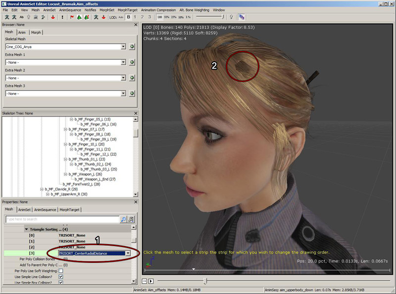
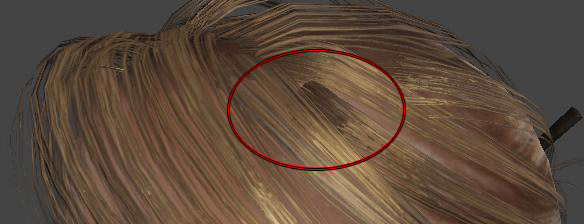

UDN
Search public documentation:
TranslucentHairSortingJP
English Translation
中国翻译
한국어
Interested in the Unreal Engine?
Visit the Unreal Technology site.
Looking for jobs and company info?
Check out the Epic games site.
Questions about support via UDN?
Contact the UDN Staff
中国翻译
한국어
Interested in the Unreal Engine?
Visit the Unreal Technology site.
Looking for jobs and company info?
Check out the Epic games site.
Questions about support via UDN?
Contact the UDN Staff
半透明の髪の毛のソーティング
ドキュメントの概要: 半透明の髪のソーティング機能と、それらを髪に適用する手順の説明。 ドキュメントの変更ログ: Jack Porter により作成。概要
髪の毛のソーティングに関する諸機能は、アニメーションセット エディタ からアクセスします。ここでは、半透明 (translucent) の髪に指定された範囲の操作 (ソーティング モードを含む) を行うことができます。三角形のソーティングモード
TRISORT_None
インデックスバッファにソーティングは適用されず、三角形の描画順は頂点キャッシュに最適化された順番です。TRISORT_CenterRadialDistance
このマテリアル/セクションのすべての頂点の中心を見つけてから、エッジを共有する三角形の個々の連続片を調べます。メッシュの中心に近い切片が先に描画され、外側の切片がそれに続きます。このモードでは下のレイヤーが先にレンダリングされるので、通常はこれでプレーヤーの頭髪に適した結果が得られます。TRISORT_Random
このモードはテスト目的で使用します。三角形にランダムな順番を与えます。TRISORT_Tootle
このモードは、AMD のオーバードローを防止する Tootle ライブラリを使って TRISORT_CenterRadialDistance に似たソートを実行します。TRISORT_Custom
このオプションでは、三角形の辺を個別に選択してソート順を変更し、常に特定の毛髪の流れの前または後にレンダリングされるようにすることができます。 適度な描画順を得るには、TRISORT_CenterRadialDistance (1) を使って髪をソートする設定が通常は一番よいのですが、ときには、特定部分が他の髪の前または後ろに描かれるように順番を変更しなければならないことがあります。例えば次図では、丸で囲んだ部分 (2) をその横の髪の後ろに描く必要があります。
これを行うために、TRISORT_Cutsom に変更してから、ASV ツールバーアイコンを使ってカスタムソーティングの編集モードを有効にします。 カスタムソーティングモードに切り替えてから、編集したい髪の束をクリックして選択します。一筋の髪束は、最低 1 つのエッジで相互につながれた、一連の三角形メッシュで構成されていて、選択するとその上に白いワイヤーフレームが描かれます。髪の束を選択したら、それを後ろに動かして別の髪束の背後に描かれるようにしたり、前方に動かして前に描かれるようにすることができます。
カスタムソーティングモードに切り替えてから、編集したい髪の束をクリックして選択します。一筋の髪束は、最低 1 つのエッジで相互につながれた、一連の三角形メッシュで構成されていて、選択するとその上に白いワイヤーフレームが描かれます。髪の束を選択したら、それを後ろに動かして別の髪束の背後に描かれるようにしたり、前方に動かして前に描かれるようにすることができます。
 後ろに移動するには、B キーを押しながらマウスを別の髪の束の上方に移動します。カーソルの下にある髪束は、選択された部分の現在後ろにある部分をブルーでハイライトします。B を続けて押し下げたまま左マウスでクリックすると、選択されている白い髪の部分の描画順が変わり、ブルー部分の背後に描かれるようになります。
前方に移動するには、F キーを押しながらマウスを髪の上に移動します。この場合は、選択された部分の現在前に位置する髪束だけがブルーでハイライトされます。ブルーの部分をクリックすると、選択した髪束の描画順が変わり、ブルー部分の前方に描かれるようになります。
ビューポートの下に黄色のテキストが現れ、各ステップの手順を示します。
後ろに移動するには、B キーを押しながらマウスを別の髪の束の上方に移動します。カーソルの下にある髪束は、選択された部分の現在後ろにある部分をブルーでハイライトします。B を続けて押し下げたまま左マウスでクリックすると、選択されている白い髪の部分の描画順が変わり、ブルー部分の背後に描かれるようになります。
前方に移動するには、F キーを押しながらマウスを髪の上に移動します。この場合は、選択された部分の現在前に位置する髪束だけがブルーでハイライトされます。ブルーの部分をクリックすると、選択した髪束の描画順が変わり、ブルー部分の前方に描かれるようになります。
ビューポートの下に黄色のテキストが現れ、各ステップの手順を示します。
 結果として、髪の流れが希望どおりの順番で描かれます。
結果として、髪の流れが希望どおりの順番で描かれます。
